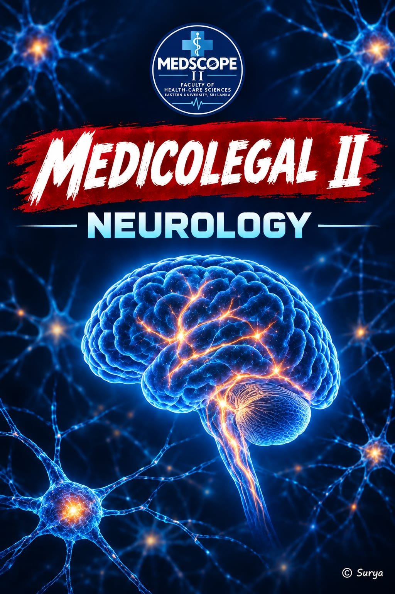

A 40-second VR experience. You'll see the room around you through the phone camera — first as it feels to be dizzy, then as it feels to have vertigo. Afterwards you'll learn the difference and what to do.
⚠ Before you start
Please stay seated. Not suitable for people with epilepsy, migraine, motion sickness, heart conditions, or who are pregnant. Take the headset off at any time if you feel unwell — tap the screen to stop.
The browser will ask to use your camera — tap Allow. Nothing is recorded or uploaded; the video stays on this device.

👆 Tap anywhere to begin (full screen)
You can take off the headset now
Here's what you just experienced.
😵 Dizziness
A general, vague feeling of being lightheaded, faint, woozy or unsteady. The world does not spin.
Common causes: standing up too fast, dehydration, low blood sugar, low blood pressure, anaemia, heat, anxiety, some medicines.
The brain is briefly not getting enough blood, oxygen or sugar — vision may blur, fade or "grey out".
🌀 Vertigo
A false feeling that you or the world is spinning or moving when nothing is.
Usually caused by the inner ear (vestibular system), e.g. BPPV (loose crystals), vestibular neuritis, Ménière's disease.
Sometimes from the brain (brainstem / cerebellum), e.g. vestibular migraine or stroke.
The eyes may twitch side-to-side — called nystagmus. You saw this as the jerky movement.
✅ What to do next
Sit or lie down straight away so you don't fall.
Keep still, focus on one fixed point, and avoid sudden head movements or bright screens.
If dizzy: drink water, have a snack if you haven't eaten, and stand up slowly.
Don't drive, climb ladders or use machinery until it has passed.
See a doctor if it keeps coming back, lasts a long time, or affects daily life — vertigo often has very effective treatments (e.g. simple head-position manoeuvres for BPPV).
🚨 Call emergency services if…
dizziness or vertigo comes with: sudden severe headache, slurred speech, face drooping, weakness or numbness, double vision, trouble walking, chest pain, a racing heartbeat, fainting, or sudden hearing loss. These can be signs of a stroke or heart problem.